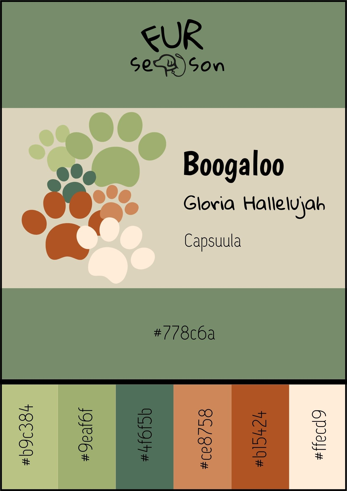

Our brand name is Fur Season. This is also directly incorporated into our brand logo, which is the full brand name except the letter “a” is replaced with an animation of a dog and a leash wrapped around its neck, as a way to represent the letter as much as possible.
In our journey to create a product that makes travel easier, cleaner, and more joyful for dogs and their humans, we kept returning to one core idea: every dog deserves to be part of life’s adventures. Whether it’s a quick trip to the park or a long road journey, our pets are family—and they deserve comfort, safety, and style on the go. During our early research and interviews with dog owners, one word kept surfacing: “fur.” It’s everywhere—in the car, on our clothes, in the air. It’s the lovable, fluffy proof of our pets’ presence. While some see it as a nuisance, we chose to embrace it as a symbol. It represents loyalty, warmth, and the everyday chaos of loving a dog.
And then came “season.” Because to us, every season is dog season. Whether it's summer beach days, cozy autumn road trips, or winter mountain getaways—our dogs are there. So why not make every season their best one yet? That’s how Fur Season was born: a name that celebrates the messy, beautiful bond between humans and their dogs. It’s not just a brand—it’s a lifestyle built around shared adventures, clean cars, and wagging tails. We don’t just sell dog baskets—we create smoother rides, safer trips, and unforgettable memories.
“In a world where every journey is an adventure shared with your dog, we believe that comfort should move with you because only then can every trip feel smooth and relieving.”
All the elements of our visual identity are chosen carefully by keeping our target group in mind and the feeling we want to invoke in them when they see our brand. For example, the font “Gloria Hallelujah” for the logo is deliberately chosen with the intent to create a playful, fun, and loose vibe. This brings forward the carefree and adventurous side of our brand. The same thought process was given during the decision for the fonts on the website, which are Capsuula and Boogaloo. Both fonts completely embody the friendly, bold, and cheerful vibe we want to convey to our target audience. We want them to feel like they can rely on our brand to make their adventures very fun and amusing.
Since we put a lot of focus on the adventurous and comfort aspects, we decided to position different shades of green, orange, and beige into our visual identity to fully encapsulate that feeling of nature and the outdoors lifestyle. Green of course represents nature, often causing people to recall trees, plants, and open fields (London Image Institute, 2024). This ties back to the dog owners who love to go far away to explore nature, such as camping or hiking. Orange was picked as it is often associated with warmth and playfulness (Patil, 2012), both aspects included in what we want to portray as it’s important our customers feel comfortable enough to fully go out on their adventures. Finally, we decided to include beige to balance out the other two vibrant colours as it provides a neutral look and feel to the palette and creates a sense of comfort and stability (Picsart, n.d.).
The references are all linked in the Content Appendix.
As for the supporting visuals, we mainly used illustrations for the website that matched our colour palette and overall aesthetic. We used drawings with light and delicate outlines to keep the peaceful and breezy vibe. Then to keep the friendliness and spontaneous image going, we added loose and simple illustrations such as arrows and lines we saw on Canva to decorate the website to draw more attention towards the presented content and to provide more clarity.
At FurSeason, we aimed to create a color palette that has functionality and fun — just like our product.
Our main color is a calm, earthy green, #778c6a, used in our logo, homepage and as the background of this container. We selected green as our primary color because dogs see the world mainly in shades of yellow and blue, which together form green — making it the most dog-friendly color choice.
To introduce a sense of warmth and playfulness, we complemented our main green with two inviting shades of orange and brown:
We also added a gentle off-white (#ffecd9) to keep the overall brand feeling clean and modern, providing contrast while maintaining a natural look.
For versatility and depth, we incorporated three additional green tones:
These colors are used across our website and product design to create a cohesive and comforting visual identity. The off-white and green shades form the foundation of our brand’s clean, classy aesthetic, while the oranges add energy and fun — just like the joy of traveling with your dog (minus the mess). By combining nature-inspired tones with practical design thinking, we’ve built a visual world that reflects FurSeason’s purpose: making travel cleaner, cozier, and more stylish for dogs and their humans alike.

For FurSeason, we selected a combination of three fonts that reflect our brand’s playful, pet-friendly identity while maintaining readability and consistency across the website.
We started with our logo, where we used the font Gloria Hallelujah. This hand-written style font brings a warm, playful energy that fits perfectly with our brand personality. To add a unique twist and reinforce our identity, we replaced the letter “a” in FurSeason with a hand-drawn dog head, making the logo both memorable and meaningful.
For the website design, we wanted a font combination that would complement the logo’s fun tone while ensuring clarity and balance. For the headlines, we chose Boogaloo from Google Fonts. Boogaloo has a bold, retro-inspired style that captures attention without being too heavy, adding a dynamic and friendly touch to key titles and page headings.
To ensure smooth readability for longer texts and general content, we chose Capsuula as our body text font. Capsuula has a clean, modern look with rounded shapes that create a light and open feel — making it easy to read while still feeling unique and contemporary.
Together, these fonts create a visual hierarchy that is engaging, consistent, and reflective of FurSeason’s core values: comfort, care, and a little splash of adventure.
To immediately capture the visitor’s attention, our homepage features a playful GIF of a happy dog enjoying a car ride — perfectly reflecting the vibe of a FurSeason road trip. The background uses our signature green color to introduce our branding.
As FurSeason offers one main product in three sizes, we created a simple layout. Customers are presented with a clear image of the product, a short description, and the price. A dropdown allows users to easily select their preferred size (Small, Medium, or Large) before adding the product to their shopping cart. This setup makes the buying process quick and user-friendly.
Our values are integrated into a short, engaging text on the "Our Brand" page. We use our off-white background to keep things clean and classy while still letting our custom, playful illustrations shine. This page helps users understand our mission — offering comfort, convenience, and a clean travel experience for dog lovers.
This page also introduces the people and Raf (our brand ambassador) behind FurSeason. We keep it simple and personal, using photos and very short descriptions. Each team member brings something special — from creativity to marketing and coding — and we highlight our dog ambassador as the face of the brand.
The website is structured across five main pages:
We kept the navigation clear and consistent to ensure a seamless user experience. The homepage sets the tone, while each additional page supports our brand story and value proposition.
The design embraces FurSeason’s playful yet classy personality. The combination of our custom color palette, quirky fonts (like Gloria Hallelujah and Boogaloo), and unique dog-themed graphics brings the brand to life.
Our website design emphasizes the simplicity and practicality of our product — making it clear what we offer and how it solves a relatable problem, while speaking directly to our Gen Z and Millennial dog-loving audience.
ChatGPT was used to assist with optimizing and refining website code and content structure.
All product visuals, graphic elements, and the homepage GIF were created by the FurSeason team specifically for this project.
Our brand solves the problem of having dog hairs everywhere while travelling. We have designed a dog basket to put in the car. You can attach this basket to the car with seat belts. It has a plastic bottom to prevent the dog from scratching the car seats. The dog basket is made of suede, which is a fabric that attracts dog hairs. As a result, the dog hairs stay in the dog basket. It has removable covers, so it is very easy to clean.
Our brand has a strong brand community. We use new, advanced technology and we have a unique design. Our product gives comfort, convenience, and quality. Never be annoyed by dog hairs in the car again. People can match the product with their vibe.
Before we are creating our website, we will promote multiple times a week on Instagram, TikTok and Facebook. This way, we will reach millennials and gen-z.
Millennial and Gen Z Pet Parents in The Netherlands that love to travel and want to keep their car clean.
The platforms these people use are mainly Instagram, TikTok, Facebook. Our target audience contains of people that have dogs and that love to travel with the dog around the age 18–34. They love to road trip with their dog, but they are annoyed by the amount of dog hairs that are everywhere in the car after a trip.
We specify on Millennial and Gen Z Pet Parents living in The Netherlands. These people do not have children, so they have a pet. They take their dog with them to almost every occasion, if possible, also on holidays. They spoil their pet and buy anything for them. They love to post their pet. For this, they use Instagram and TikTok. Because they are on these apps, it is perfectly to promote our website and reach this target audience on these apps.
The age range of 18–24 is the largest group that uses these apps (Zote, 2024). That suits Gen-Z. Also, these people are travel enthusiasts. They love to travel with their dog. Travel enthusiast could be of any age. For this reason, we do not only want to use Instagram and TikTok, but also Facebook. On this app, the average age is older. The largest age group is 25–34 (Zote, 2024). That average is higher than for other apps. With the use of Instagram, TikTok and Facebook, we are able to reach our complete target audience.
In the Netherlands there are around 1.8 million dogs, with around 18% of households owning a dog.
What communication objectives will you achieve? Reach objectives, Affect, Response.
For our marketing campaign, we would like to reach around 20 to 50 unique visitors on the social media platforms we will be posting our content on. We are striving for an average number as this seems the most realistic goal for a start-up brand. Though the different websites (Instagram, TikTok, Facebook) do not guarantee similar potential in terms of reach across all of them, we still strive for 20 to 50 unique reaches for the advertising content we are planning to release.
Our KPI’s: 8,000 views within 6 weeks on TikTok, 1,200 views within 6 weeks on Instagram, 50–150 followers in 6 weeks (Instagram and Facebook combined), reach 25 people on our website (put the link into our bio)
The intended emotions we want to invoke in our target audience when they see our brand is that they feel seen, understood, and assisted for the seemingly unsolved issues they have had with their dog so far. Seeing our content should make them feel hopeful and eventually motivated enough to check our website.
Lastly, the ultimate response we want from our target audience is that they feel curious enough to check out our social media accounts, viewing more posts we have posted. Further on, we strive for them to engage directly with our content. They can do this by liking, sharing, and commenting on our media content. Then after viewing our website, they feel driven enough to check out the products that are put up and eventually make a purchase, or even multiple purchases.
We are using the following platforms:
We are only using online advertising. Because we have a broad target audience of Millennial and Gen Z Pet Parents in The Netherlands that love to travel and want to keep their car clean, we will use these different platforms. We will use Instagram and TikTok to reach the Gen Z audience. We will use Instagram and Facebook to reach the Millennial audience.
We decided to post on mostly Mondays and Thursdays for every social media platform. For Mondays, these will be around the 7 PM timeframe. As for Thursdays, we will be posting around 9 PM. It has been measured that these timeslots are the most effective when it comes to posting on social media platforms in The Netherlands (Radaar, 2025). Though, we are open to experimenting with different days and timeslots for posting to see what works best for our brand especially.
We intended to get 50–150 followers in 6 weeks on Instagram and Facebook combined. We wanted 1,200 views within 6 weeks on Instagram. We strive for 20 to 50 unique reaches for the advertising content we are planning to release.
We switched our Instagram account to a professional account after one week, which means that our first 2 posts are not included in our statistics.
After 3 weeks:
| Content Type | Percentage of Views |
|---|---|
| Posts | 82.2% |
| Stories | 17.8% |
| Reels | x |
After 4 weeks:
| Viewer Type | Percentage |
|---|---|
| Posts | 71.1% |
| Stories | 28.3% |
| Content Type | View Distribution |
|---|---|
| Posts | 69.7% |
| Stories | 17.2% |
| Reels | 13.1% |
| Content Type | Like Distribution |
|---|---|
| Posts | 78.1% |
| Reels | 15.1% |
| Stories | 6.8% |
We met our objectives for both followers and views. The evening posts performed better, and reels had the highest engagement. In the future, we plan to post more reels and maintain the evening schedule.
We posted the same content as Instagram. After 3 weeks, we had 48 followers on Instagram and only 1 on Facebook. The platform had little influence on engagement. Because Facebook was ineffective, we decided to stop using it in our campaign.
We made two posts featuring our mascot Raf:
| Post | Views | Likes | Comments | Saves | Shares |
|---|---|---|---|---|---|
| Introduction Post | 705 | 23 | 1 | 3 | 1 |
| Meme with Raf (Titanic soundtrack) | 135 | 12 | 2 | 2 | 0 |
| Post | Views | Likes | Comments | Saves | Shares |
|---|---|---|---|---|---|
| Travel Destinations (Mon) | 45 | 7 | 0 | 0 | 0 |
| April Fools Meme (Tues) | 839 | 24 | 7 | 0 | 4 |
| Travel Tips Slideshow (Wed) | 730 | 20 | 0 | 0 | 0 |
| More Destinations (Thurs) | 30 | 5 | 0 | 1 | 0 |
| Post | Views | Likes | Comments | Saves | Shares |
|---|---|---|---|---|---|
| Raf Stick Meme Slideshow | 1011 | 100 | 5 | 2 | 0 |
| Raf World Tour Slideshow | 767 | 82 | 1 | 1 | 0 |
TikTok Week 3 showed that Raf-centered, humorous slideshow posts are our most effective format. The Raf stick meme had the best engagement, showing that lighthearted, mascot-driven content performs best. We will continue creating similar content in the future.
Final TikTok result: over 4,000 views and 22 followers — short of our 8,000 view goal but still aligned with our follower goal when combined with Instagram.
We learned that the posts that were posted around the evening got more views and likes than posts that were posted in the morning, so we continued to do that in the end for the last couple of posts. We also learned that it is better to post professional content on Monday–Friday, since people are more likely to see and interact with your post on these days. Additionally, reels get more views than posts. If we want to promote something in the future, we will create more reels.
We also learned that it is important to make your account a business account immediately after creating it, because now, we cannot see the statistics of our first two posts. We also learned that you get more followers if you promote your account. One way to do this could be to follow other accounts so they become aware of your page.
For TikTok, we learned a lot by simply experimenting — with formats, posting times, and posting days. We now know that for TikTok, it works well to post in the late afternoon or evening; morning posts don’t perform as well, unless the content is event-driven (e.g., April Fools post). We saw that slideshows work best, and consumers love bite-sized entertainment — casual, engaging, comedic, and emotionally uplifting content.
We want to reflect on several aspects. Initially, we planned to consistently post on Facebook, Instagram, and TikTok. However, due to low engagement and limited reach, we decided to discontinue Facebook and focus our efforts on the other platforms.
In future assignments, we could research more intensively, which might have shown us earlier that Facebook was not a successful platform for our target group.
Due to content planning and researching taking longer than expected with TikTok, we decided to begin posting actively in week 2. This issue could be resolved in the future by better planning and allowing broader timeframes to avoid timing issues.
Like Instagram, we only switched to a business account a little too late. This caused our analytics to be limited and not fully useful. For TikTok, we didn’t use any analytics because of this. In the future, we now know to convert to a business account immediately after account creation — a mistake we won’t repeat.
-Car seats covered in hairs: It often happens car seats are covered in dog hairs that are almost impossible to remove. Currently, there are already covers to put over your seats, but they are not easy to clean and do not solve the other problems.
-Car seats get scratched or get dirty: Dogs scratch the car seats with their nails, as they sit in the backseat. They also bring dirt inside of the car after they went outside.
-Dogs slip and fall: If dog do not have a safe space, they could slip and fall in the car as the car turns while driving.
-Dogs feel anxious: If dogs feel anxious because of the driving, they try to walk around in the car, which is unsafe.
-Easily cleanable dog car basket: The dog car basket is innovative in the sense that it has the ability to clean itself, ensuring that pet owners can easily keep their car clean.
-Suede-like fabric attracts and traps dog hair: The choice was deliberate to attract and collect the dog hair to keep it from dirtying the car seats.
-Removable covers for easy washing: This leads to maintenance being easier, removing the hassle that comes with having to clean the car seats from fur.
-Raised borders for stability and safety: The raised borders prevent dogs from slipping or falling during the ride, ensuring that they are safe and calm.
-Plastic bottom protects seats from scratches: Sturdy plastic bottom protects car seats from scratches and dirt.
-Secure straps keep the basket in place: Secure attachment straps keep the basket in place, promising stability and safety for the dog.
-Multiple sizes for different dog breeds: Available in multiple sizes to accommodate different dog breeds.
-Number of website visitors: We will track how many units were sold, the monthly revenue, and conversion rate to calculate the success and growth we generated.
-Number of subscriptions on the website: To check on how much engagement we get from our customers, we are going to track website traffic.
-Number of product sales: In order to see the success of our marketing strategies, we will track the click-through rates from social media to our website and cost per customer acquisition. Then with customer reviews, return rates, and user-generated content featuring our product, we will be able to check the product satisfaction.
- Mess-Free Travel: We are providing dog owners with a hassle-free and safe travel solution by offering a car seat basket designed to attract and trap unwanted dog hairs. The basket’s special fabric attracts dog hair, keeping your car cleaner.
- Easy Maintenance: Removable covers allow for effortless cleaning. You can wash them easily.
- Enhanced Safety: Raised borders and secure attachment straps for seat beels keep your dog safe and comfortable during car rides
-Strong brand community for pet-friendly travel; The dogowner community is a very involved and concerned community. These pet parents share a deep emotional bond with their dogs and want to provide them with the best. Also, online dog owners share, connect and support eachother.
- Variety of sizes and colors for all dogs; Our product is available in many different colours and sizes, so it fits all sorts of dogs and aesthetic that the customer wants.
- Special fabric traps dog hair, unlike standard carriers; Our dog bed is made of fabric to trap the dog hairs, so they don’t fly around the car.
-Social media (TikTok, Instagram, Facebook): We will post and reach our customers via TikTok, Instagram and Facebook, because if we use all of these, we reach our complete target audience. Social media is accessible for us.
-Advertising within pet stores: In pet stores, we will advertise bye hanging flyers there. In pet stores, we will find the right target audience.
- Millennial and Gen Z dog owners who love to travel and prioritize a clean car: People that are young and dynamic are more adventures, and love to travel. If they want a clean car, our product can provide a solution to take the dog with you.
- Pet parents looking for a safe and comfortable travel solution for their dogs: pet parents that care a lot about the safety of their dog while travelling, our product can provide the solution to provide this comfort, because you can attach the basket with seat bells and it has raised borders.
- Product sales from the websites: Our revenue stream will be the product sales directly from our website. We will also put our product on online marketplaces like amazon to make sure it is seen more and sold more.
- Amount of people that visit our website: As soon as we have the statistics of our website, we know how many people visited it. This is a good indication of the succes of our brand.
- E-commerce and website maintenance: We will have to host the website, create a design and keep it secured. Another cost is the payment processing fees and the customer support services. (Fixed costs).
- Product development and manufacturing: To support our high-quality production, we need high-quality materials for our products. Think of scratch resistant plastic. We need to research and develop the self-cleaning technology. After that we have to do prototyping, testing and quality assurance of the product. (Variable costs).
E-commerce and website maintenance: We will have to host the website, create a design and keep it secured. Another cost is the payment processing fees and the customer support services. This needs to be maintained, so our product looks professional and trustable, but that costs money.
Product development and manufacturing: To support our high-quality production, we need high-quality materials for our products. Think of scratch resistant plastic. We need to research and develop the removable covers. After that, we have to do prototyping, testing and quality assurance of the product. All this research is important to give the product the best quality, while keeping the costs low. This way, we can create a good brand image.
Fixed Costs: Website domain and hosting fees Brand development (logos, trademarking, etc.) E-commerce and Website Maintenance Website hosting and design fees Security and maintenance costs
Variable Costs: Product Development and Manufacturing Cost of raw materials (e.g., scratch-resistant plastic) Production costs per unit (factory costs, labor per unit)
To reach our whole target audience, we will use three platforms. First, Instagram. The age group on Instagram that is the biggest is 25-34, taking up around a third of the users. Second, TikTok. The age group on TikTok that is the biggest is 18-34, taking up around sixty percent of the users. Third, Facebook. The age group on Facebook that is the biggest is 25-34, taking up around a third of the users. This way, we will cover our complete target audience, gen-z and millennials.
By using all these platforms, we will reach the target audience that exists of Millennial and Gen Z pet parents